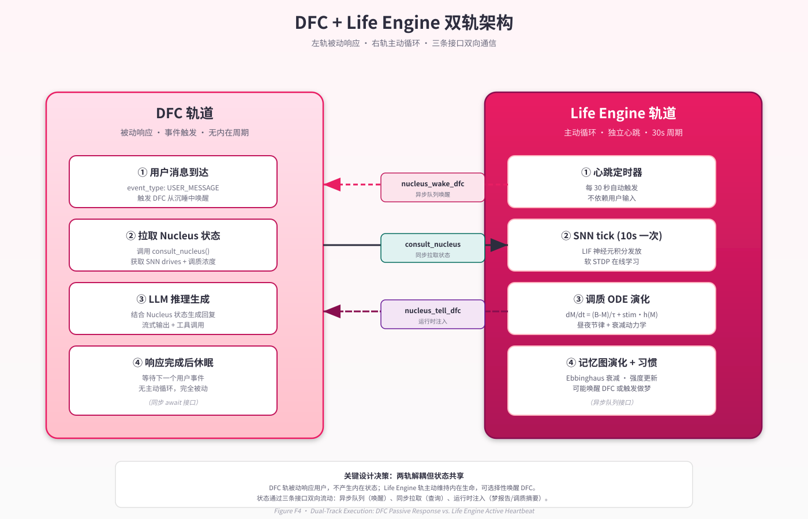
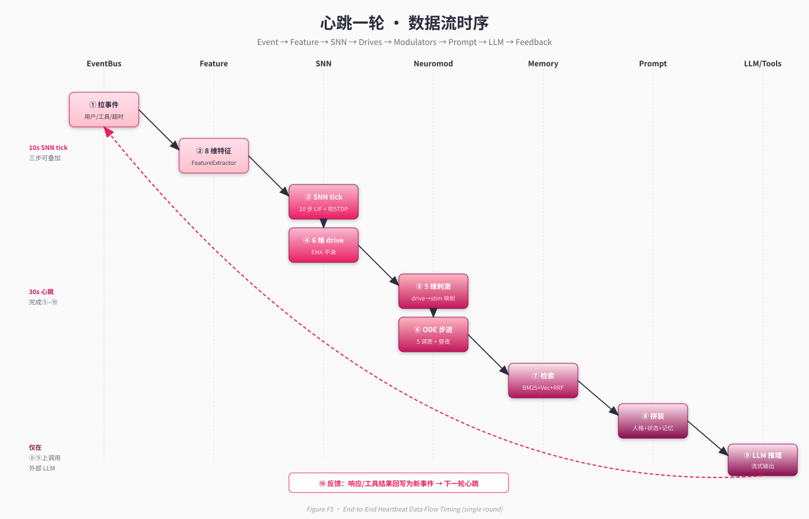

第 4 章 · 系统总览¶
"我们采用的是一种『皮层–皮层下』的双层隐喻：LLM 是皮层，承担表达与高阶整合；SNN、调质、记忆图、做梦循环则是皮层下系统，承担情绪、节律、稳态与本地学习。皮层之外尚有皮层下，意识之下尚有连续。" — 项目设计备忘录
4.1 双轨执行模型¶
Neo-MoFox 在最顶层把"如何让一个数字生命体活着"这个问题拆成两条互补的执行轨：
- DFC 轨（被动应答）：default_chatter (DFC) 是项目继承自前作的对话内核，负责处理"用户说话 → LLM 回应 → 工具调用 → 流式回写"的整条管线。它由用户输入触发，是事件驱动的、无状态周期的。
- Life Engine 轨（主动心跳）：Life Engine 是本项目新增的皮层下中枢，由独立的协程心跳驱动。它每 30 秒检查一次外部环境与内部状态，每 10 秒推动一次 SNN tick；它的存在不依赖任何外部输入。
两条轨道经由三个明确定义的接口耦合（详见第 10 章）：
nucleus_wake_dfc(stream_id, payload)—— Life Engine 在认为应当开口时唤醒 DFC（异步队列）。consult_nucleus(query)—— DFC 在生成 prompt 时同步拉取内在状态（drives、neuromod、记忆检索）。nucleus_tell_dfc(stream_id, text)—— Life Engine 把梦报告或离线巩固结论注入 DFC 的运行时上下文。
这一双轨设计直接服务于第 3 章的连续性原则：DFC 满足"被外部触发时给出回应"，Life Engine 满足"在两次外部触发之间状态仍在演化"。两者并不互相替代，而是构成完整生命体的两个相位（见 Figure F4 双轨架构）。

Figure F4 · 双轨架构（DFC + Life Engine）
4.2 三层异质子系统¶
在 Life Engine 内部，我们进一步把"皮层下"拆成三个异质子系统，这一切分对应了第 3 章的系统涌现原则——智能是子系统协作的产物：
| 层 | 角色（脑区类比） | 主要责任 | 实现位置 |
|---|---|---|---|
| 皮层 (Cortex) | 大脑皮层 | 高阶表达、整合、工具调用 | DFC + LLM |
| 调质层 (Limbic) | 边缘系统 + 下丘脑 | 情绪惯性、昼夜节律、习惯稳态 | plugins/life_engine/neuromod/ |
| 皮层下 (Subcortical) | 杏仁核 + 基底节 | 本地学习、驱动信号、稳态调节 | plugins/life_engine/snn/ |
这三层不是松散并列的模块，而是有明确信号链的协作体（见 Figure F5 数据流时序）：

Figure F5 · 数据流时序图
事件流 ──► 8 维特征向量 ──► SNN ──► 6 维 drive 输出
│
▼
5 维刺激 ──► Neuromod ODE ──► 调质浓度
│
▼
记忆检索 + drive + 调质 ──► Prompt 注入
│
▼
LLM 推理
│
▼
响应 + 反馈事件
│
└──► 反向回写 SNN/调质/记忆
每一层的"频率窗"和"时间常数"都不同：SNN tick 在 10 秒级、调质 ODE 在 30 分钟到 3 小时级、习惯演化在天级、记忆衰减在月级。这种多时间尺度的耦合是连续性原则在工程层面的兑现——任何瞬间，都至少有一个时间尺度上的状态正在演化。
4.3 多时间尺度耦合表¶
为了让多时间尺度协作清晰可见，下表汇总了系统中所有有明确"演化频率"的状态变量：
| 时间尺度 | 状态变量 | 演化算子 | 触发频率 |
|---|---|---|---|
| 微秒 | LIF 膜电位 \(V\) | \(dV/dt = -(V-V_{rest})/\tau + I/\tau\) | 每次 SNN step |
| 秒 | SNN 神经元活动度 EMA | 指数移动平均 | 每个 SNN tick (10 s) |
| 分钟–小时 | 调质浓度 \(M\) | \(dM/dt = (B-M)/\tau + \text{stim}\cdot h(M)\) | 每个心跳 (30 s) |
| 小时 | drive EMA | 指数移动平均 | 每个心跳 (30 s) |
| 天 | 习惯 streak / strength | 累加 + 阈值衰退 | 每日定时 + 事件触发 |
| 天–周 | SNN 突触权重 \(W\) | 软 STDP（在线） | 每个 SNN tick (10 s) |
| 周–月 | 记忆边权重 | Hebbian 强化 + Ebbinghaus 衰减 | 检索/写入触发 |
| 永久 | 持久化 JSON 上下文 | 原子写盘 | 每个心跳末（约 30 s） |
形式上，记 \(\mathbf{s}(t) = (\mathbf{s}_{\mu s}, \mathbf{s}_{s}, \mathbf{s}_{m}, \mathbf{s}_{h}, \mathbf{s}_{d}, \mathbf{s}_{w})\) 为按时间尺度索引的状态分量，则 Neo-MoFox 满足：
即"任何不在 LLM 调用瞬间的时间点，至少有一层状态正在演化"。这正是第 3 章 C2 不变式的强化形式。
4.4 数据流：从事件到行为的因果链¶
具体到一次心跳的内部流程，整体数据流如下（见 Figure F5 细化版）：
- 事件采集：心跳协程从 EventBus 拉取自上次心跳以来的事件队列（用户消息、工具调用、超时、自身梦境等）。
- 特征提取：把事件序列编码为 8 维输入向量（聊天频率、最近沉默时长、情感极性等，详见第 5 章 §5.8）。
- SNN 演化：把 8 维输入注入 SNN，运行 10 步 LIF 推理 + 软 STDP 学习，输出 6 维 drive。
- drive → 刺激映射：把 6 维 drive 中与情绪相关的 5 维线性投影到 5 个调质刺激信号。
- 调质 ODE 步进：以 30 秒为步长求解每个调质的 ODE，更新浓度。
- 昼夜调节：根据当前真实时间（小时数），调整每个调质的基线。
- 状态检视：判断是否进入睡眠窗口（NREM/REM 调度，见第 8 章）；判断是否要主动唤醒 DFC（基于 drive 阈值）。
- 持久化：把 SNN/调质/drive/最近事件等序列化到
life_engine_context.json（原子写）。 - 可选广播：若有需要被 DFC 看见的状态变化（如梦报告），通过接口广播至 DFC。
此流程的关键不变式是：每一步都不假设外部输入存在；当外部输入为空时，整条管线仍然完整执行（事件向量为零向量，但 LIF 衰减、调质回归、记忆遗忘照常推进）。这正是 decay_only 路径与 step 路径并存的原因（plugins/life_engine/snn/core.py）。
4.5 计算预算：频率分层¶
不同子系统的延迟预算差异极大，必须按频率分层执行，否则系统无法在用户感知的时间内做出反应：
| 子系统 | 单次延迟（量级） | 频率 | 备注 |
|---|---|---|---|
| LIF 单步 | < 100 µs | 内部循环 | NumPy 矩阵运算，无 IO |
| SNN tick（10 步） | ~1 ms | 10 s 一次 | 含 STDP 更新与持久化标记 |
| 调质 ODE 步 | < 100 µs | 30 s 一次 | 5 个一阶 ODE，欧拉离散即可 |
| 记忆检索 | 5–50 ms | 每次 prompt 拼装 | BM25 + 向量 + RRF |
| LLM 推理 | 1–10 s | 每次用户输入 | 远端 API 调用 |
| 心跳整轮 | 5–20 ms（无 LLM） | 30 s 一次 | 不含 LLM 调用时 |
| 做梦循环 | 数秒到数十秒 | 每日一次 | 含 LLM 叙事生成 |
这种分层让我们既能让快子系统每秒都在演化，又不会因 LLM 的秒级延迟而拖累整体心跳。LLM 在系统中是一个"被异步调用的高级整合器"，而不是"主循环里阻塞的核心"。这与多数现有 LLM Agent 框架（其中 LLM 调用本身就是主循环，详见第 12 章）形成鲜明对比。
4.6 部署形态¶
整个 Neo-MoFox 以单进程 + 多协程的形态运行：
- 主进程是 DFC 的 asyncio event loop。
- Life Engine 在同一 event loop 中以独立 task 运行心跳协程。
- 状态共享通过显式接口（§4.1 三个函数）而非全局变量；调用通过
await与队列分别处理同步/异步语义。 - 所有持久化集中在
data/life_engine_workspace/：JSON 上下文、SQLite 记忆库、向量索引、梦报告归档。
这一选择刻意避免了多进程/分布式的复杂性，把"连续性"的工程负担集中在协程的不被打断与状态的原子持久化两个关键点上。第 9 章会详细展开心跳调度与崩溃恢复的语义。
4.7 与三大原则的对应¶
最后，我们把本章的工程要素直接映射回第 3 章的三大原则，作为整本报告的索引地图：
| 工程要素 | 主要服务的原则 |
|---|---|
| Life Engine 心跳（§4.1） | 连续性 (C1, C2) |
| 三层异质子系统（§4.2） | 系统涌现 |
| 多时间尺度耦合（§4.3） | 连续性 + 涌现 |
| SNN 软 STDP / Hebbian 边强化 / 习惯 streak | 自下而上学习 |
| 状态持久化（§4.6） | 连续性 (C4) |
| Prompt 拼装（§4.4 第 7 步） | 涌现（皮层从皮层下读到状态） |
后续章节（5–10）将逐项把上表中的工程要素打开。读者可按"工程要素 → 章节"的索引选择阅读路径（详见第 1 章 §1.6）。
4.8 小结¶
本章完成了从哲学到实现的桥接：双轨执行让连续性具体可触摸；三层异质子系统让涌现有了协作的舞台；多时间尺度耦合让"任何瞬间都有状态在演化"成为工程不变式。下一章起，我们正式进入皮层下系统的深部，从 SNN 开始。